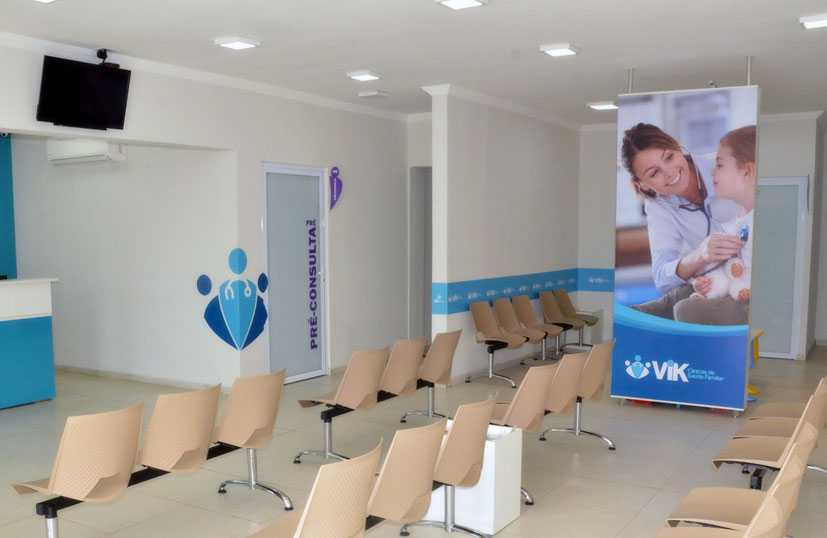

Dermatologia e Estética A Clínica de Pele inicia a sua história na dermatologia em 1969 através do Dr. Brou Brais, atendendo em Copacabana e no Centro do Rio de Janeiro (RJ). Oferecemos tratamentos de medicina estética avançada e procedimentos a Laser desde 2002. Há mais de 50 anos, pautamos nossos compromissos na ética, no zelo e respeito pelos nossos pacientes. A nossa experiência com o uso do Laser ao longo dos anos também nos levou a oferecer cursos a médicos iniciantes.
